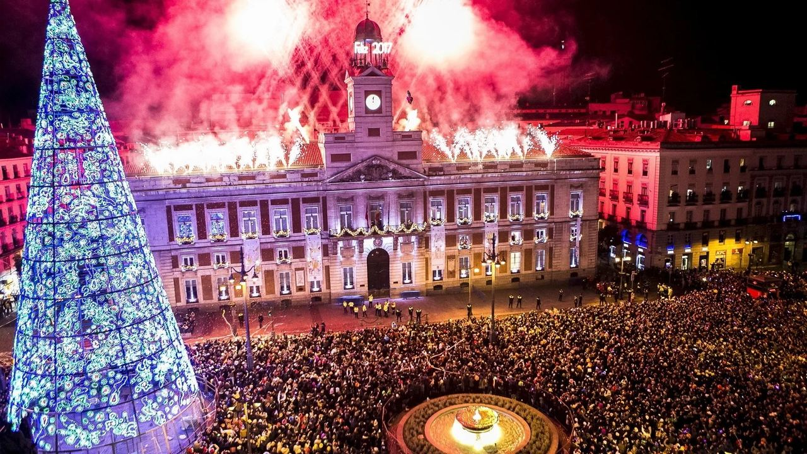
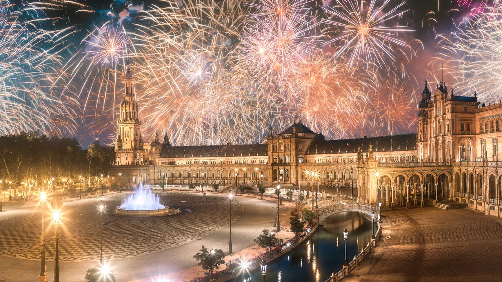
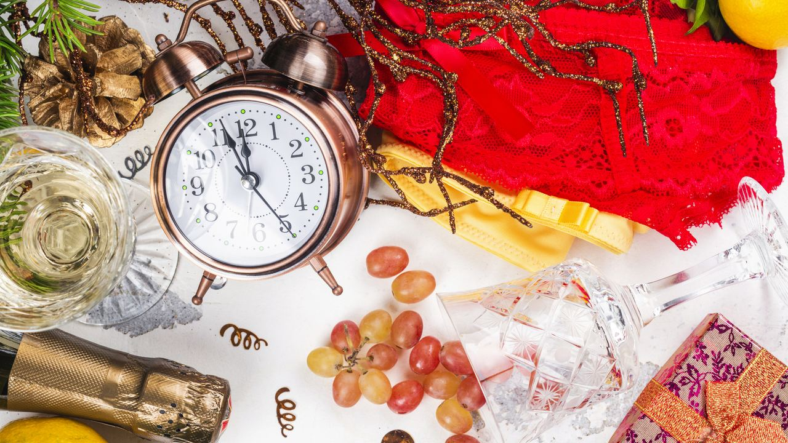
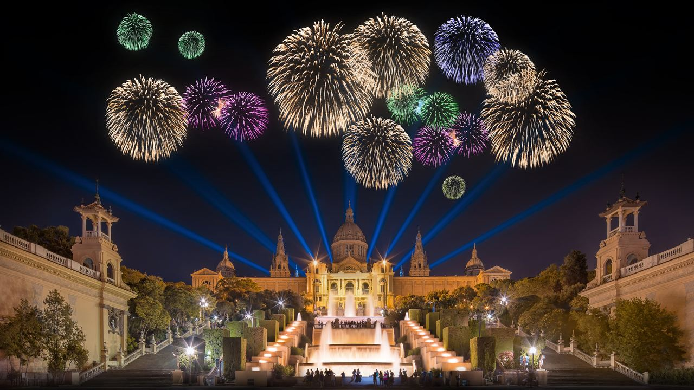
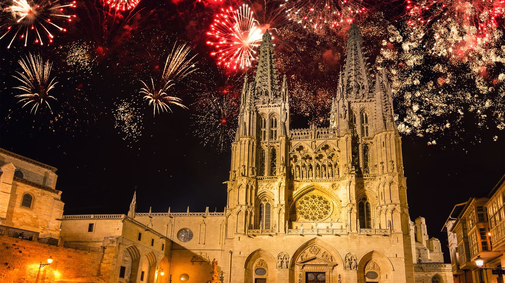

Vivir en España · Tradiciones
Año Nuevo en España: así se recibe el año
 Por Anita Orłowska · · actualizado · 3 min de lectura
Por Anita Orłowska · · actualizado · 3 min de lectura

En resumen: En Nochevieja lo habitual es una larga cena en familia y, a medianoche, las 12 uvas, una por cada campanada, para tener 12 meses de suerte. Las campanadas de la Puerta del Sol de Madrid se siguen por televisión en todo el país. Se suma la ropa interior roja y una copa de cava. Las fiestas empiezan después de medianoche y duran hasta el amanecer. El 1 de enero es festivo, tranquilo y familiar. Muchas de las uvas proceden del Vinalopó, en Alicante.
La Nochevieja en España tiene su propio ritmo: la noche es tranquila y familiar, el momento más importante dura doce segundos y la fiesta empieza cuando termina.
Así se vive, por si quiere celebrarla como un vecino más.
La cena en familia

La Nochevieja empieza en casa o en un restaurante con una cena larga, a menudo con marisco, jamón ibérico, cordero o pescado, y turrón y otros dulces navideños de postre. Los restaurantes ofrecen menús especiales; conviene reservar pronto, sobre todo en la costa.
Las 12 uvas de la suerte

Poco antes de medianoche todos se reúnen ante el televisor o en la plaza del pueblo. Con cada una de las doce campanadas se come una uva: 12 uvas para 12 meses de suerte. Es más difícil de lo que parece, y las risas forman parte de la tradición. Los supermercados venden uvas peladas y sin pepitas en latas. La costumbre se popularizó a principios del siglo XX, y hoy muchas de las uvas proceden del Vinalopó, en Alicante, donde los racimos se cultivan embolsados en papel para madurar tarde.
La Puerta del Sol y la fiesta después de las campanadas

Las campanadas más famosas son las del reloj de la Puerta del Sol de Madrid, en directo por televisión. Muchos municipios organizan su propia celebración en la plaza principal, con música y a veces fuegos artificiales. Solo después de las uvas y el brindis con cava empieza la fiesta: cotillones, discotecas y bares abren hasta el amanecer, y hay quien termina con chocolate con churros.
Otras costumbres para la suerte
- Llevar ropa interior roja, mejor si es regalada.
- Echar un anillo de oro en la copa de cava al brindar.
- Entrar en el año nuevo con el pie derecho.
- En algunos pueblos costeros, bañarse en el mar a medianoche o el día de Año Nuevo.
El 1 de enero

El día de Año Nuevo es festivo nacional. La mayoría de tiendas cierran, las calles amanecen tranquilas y las familias vuelven a reunirse para comer. Las fiestas aún no han terminado: el gran día de los niños llega el 6 de enero. Lea los Reyes Magos en España y la Navidad en España.
Preguntas frecuentes
¿Por qué se comen 12 uvas en Nochevieja?
Para la suerte: una uva con cada una de las 12 campanadas de medianoche, una por cada mes del nuevo año.
¿Dónde está la celebración de Nochevieja más famosa de España?
En la Puerta del Sol de Madrid, cuyas campanadas se retransmiten en directo a todo el país.
¿Es festivo el 1 de enero en España?
Sí, es festivo nacional y la mayoría de tiendas y oficinas cierran.
¿Qué se bebe en Nochevieja en España?
Normalmente cava, para brindar después de las uvas.
Empezar el año en España
Para muchos de nuestros clientes, la idea de mudarse empezó con unas vacaciones de invierno en la costa. Si una casa junto al mar está entre sus planes para el año que viene, escríbanos.
Fuentes: Spain's official tourism portal – New Year's Eve · DOP Uva de Mesa Embolsada del Vinalopó · BOE – National public holidays